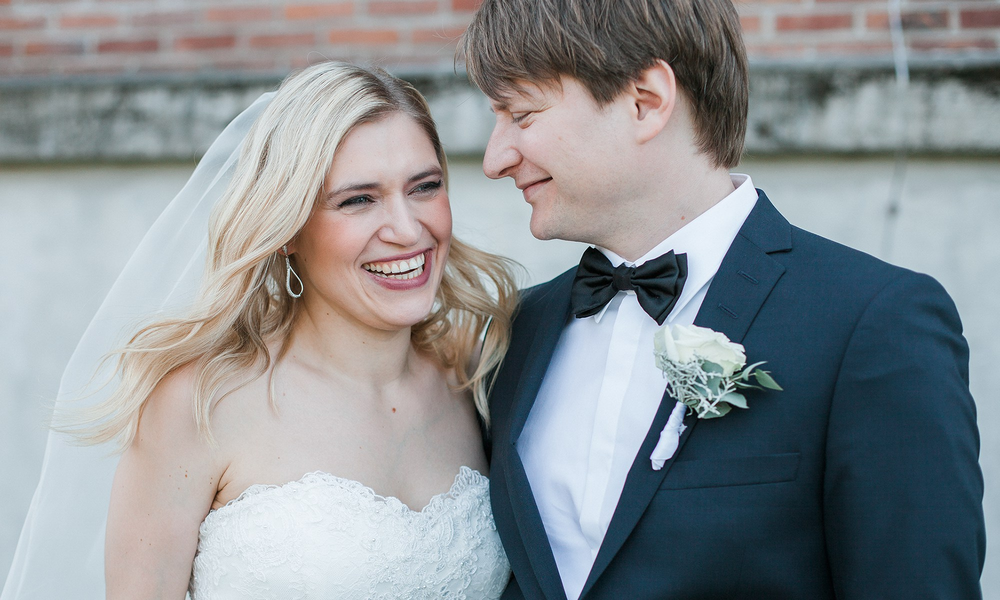
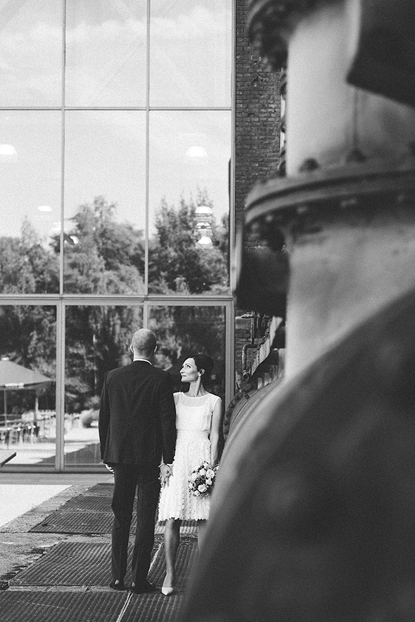
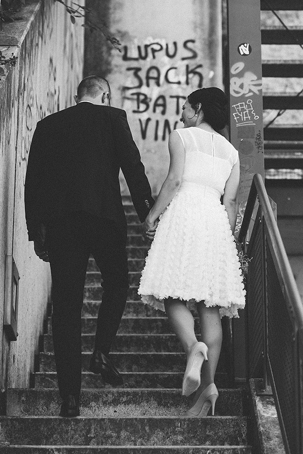

<link rel="stylesheet" type="text/css" href="grid-gallery.css">
<section class="portada album">
    <!--<video src="fondo_portada.mp4" autoplay loop></video>-->
    <div id="scene">
        <div class="layer" data-depth="0.20">
            
        </div>
    </div>
</section>
<section class="blabla">
    <header>
        <p class="subtitle" style="margin-bottom: 0">30. Dezember '16</p>
        <h1>IWONA & MARCO</h1>
        <p class="subtitle">Romantisch & wild in der Tanzwelt Schauburg Iserlohn</p>
    </header>
    <div class="justificado">
    <p>Tatjana & Kamin, ein sehr entspanntes und verliebtes Paar lernte ich Anfang des Jahres kennen. Die beiden sind gebürtige Bochumer und leben nun in Frankfurt, aber gefeiert werden sollte trotzdem in der Heimat. Ich war froh darüber, dass wir uns vorher noch persönlich kennenlernen konnten, denn so konnten mir die beiden ihre Wünsche und Vorstellung erzählen. Schnell war klar, dass wir auf einer Wellenlänge liegen.</p>

    <p>Der Tag der standesamtlichen Trauung war einer der heißesten des Jahres. Die beiden entschieden sich dazu, das Shooting vor der Trauung zu machen und ich denke, das es das beste war, was passieren konnte! Um 10 Uhr morgens waren es schließlich nur 32 Grad und nicht 40. Tatjana sah wunderschön aus! Ein kurzes, mit Applikationen gelegtes Kleid, es passte eifach perfekt zu ihr. Kamin hatte es ein wenig schwerer mit seinem Anzug bei den Temperaturen.</p>

    <p>Als Location entschieden wir uns für die Jahrhunderthalle in Bochum, eine tolle industrielle Location die etwas magisches an sich hat. Ich war vorher noch nie dort, aber würde sie immer wieder weiterempfehlen. Gefeiert wurde im Borgböhmer`s Waldesruh, eine wunderschöne ruhig gelegene Location mit einer tollen Panorama Terrasse. Ein Saxophonist begleitete den Sektempfang, tolle Lounge Musik zur wunderschönen und entspannten Hochzeit.</p>

    <p>Ich danke euch!</p>
    </div>
</section>
    <section class=grid-gallery>
        
        
        
    </section>
